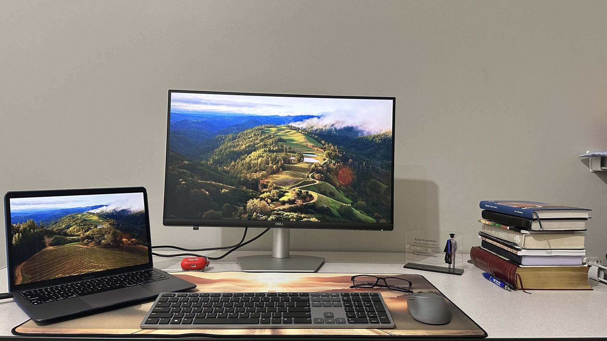
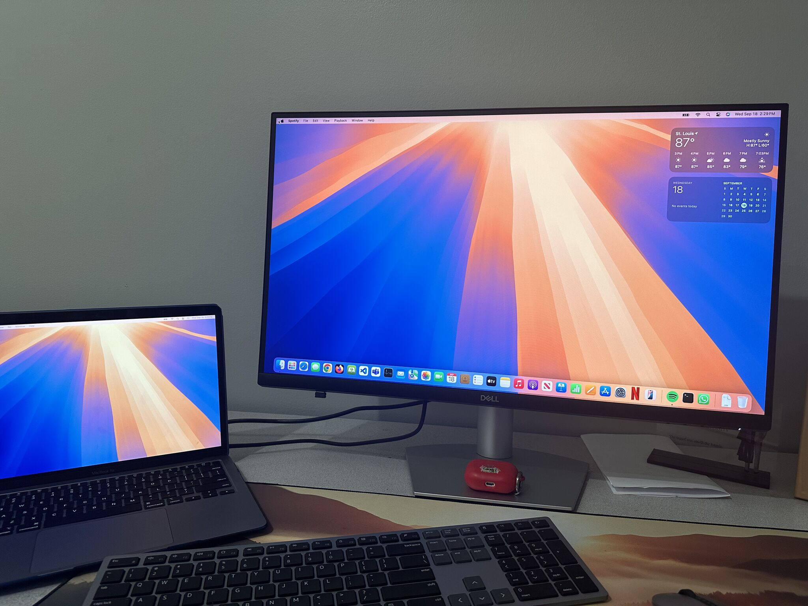
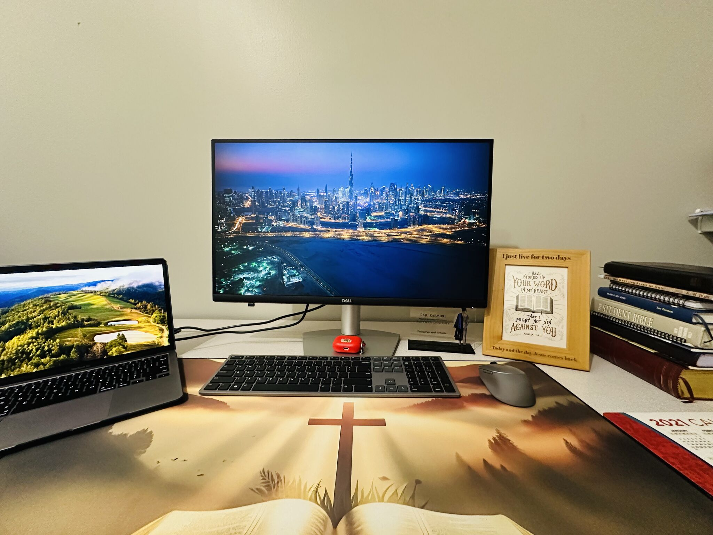

Backend engineering
Java · Spring Boot · Microservices · REST APIs · Hibernate/JPA · Node.js · Python
Available for new opportunities
I’m Raju, a Senior Java Backend & Cloud Engineer with 6+ years of experience architecting secure microservices, high-throughput APIs, and serverless AWS applications.

Backend
engineer
CORE STACK
/ 01 — ABOUT
My work sits at the intersection of Java engineering, distributed systems, and cloud operations. I design the dependable foundations behind products: well-structured APIs, efficient data access, event-driven workflows, and automated delivery.
Get in touch →Java · Spring Boot · Microservices · REST APIs · Hibernate/JPA · Node.js · Python
AWS Lambda · API Gateway · S3 · Aurora PostgreSQL · IAM · Terraform · Kubernetes
JUnit 5 · Mockito · TDD · OAuth 2.0 · JWT · CI/CD · Query optimization
/ 02 — EXPERIENCE
Force Focus · Chennai, India
Designed production Java microservices on AWS Lambda and API Gateway, engineered secure S3 file pipelines, and removed serverless database bottlenecks with Aurora PostgreSQL and RDS Proxy. Mentored 3 backend developers and established automated testing standards above 90% coverage.
Zyxware Technologies · Austin, TX
Architected a secure document automation backend supporting 6 federal programs. Modernized legacy services into Spring Boot microservices and cut deployment lead times by 60% through Terraform, GitLab CI, and Jenkins automation.
The Drop Times · Saint Louis, MO
Developed 12+ RESTful Spring Boot microservices with filtering and pagination, then improved API response time by 25% through SQL query planning and JPA caching. Built JWT and RBAC authentication across 10+ roles.
Saint Louis University · Saint Louis, MO
Engineered a serverless CSV ETL pipeline with Lambda, S3, and Python Pandas, removing 50% of manual processing overhead. Led a five-engineer Agile team and built a real-time grading backend with Flask and OpenCV.
IBM · Bangalore, India
Maintained mission-critical backend batch engines processing 100K+ daily transactions with 99.9% uptime. Reduced critical-fault resolution time by 40% through deep-trace log analysis and executed continuous-availability failover migrations.
/ 03 — SELECTED WORK

An open-source optical mark recognition platform for fast, accurate assessment workflows.
Currently modernizing the company website to create a clearer, more polished digital presence.
Visual stories that build your brand—premium photography and cinematic films for restaurants, cafés, hotels, and modern businesses.
/ 04 — WRITING
A five-part practical series on preparing for software engineering interviews.
Interview Preparation Series

04Interview Preparation Series
Interview Preparation Series

02Interview Preparation Series

01Interview Preparation Series
/ 05 — CREDENTIALS

AWS Certified Solutions Architect – Associate (March 2025)
AWS Certified AI Practitioner (September 2026)
MS Computer Science, Saint Louis University · GPA 3.6